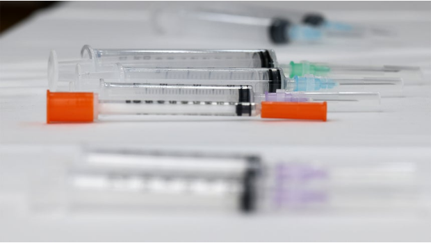

9/4(금) · 기준 2026-09-03 22:00 ~ 2026-09-04 06:00
엑셀 다운로드
"이미지 다운로드"를 누르거나, 이미지를 길게 눌러 저장한 뒤 카톡으로 보내세요.

![[연합뉴스] 노동쟁의 대상 시행지침안에 따른 주요 판단](images/graphics/연합뉴스_01.jpg)
![[연합뉴스] 티빙 개인정보 유출 계정 현황](images/graphics/연합뉴스_02.jpg)
![[연합뉴스] 사이버보안 특화 AI모델 사업 개요](images/graphics/연합뉴스_03.jpg)
![[뉴시스]](images/graphics/뉴시스_04.jpg)
![[뉴시스] 공공기관 109개 줄인다…발전5사·석유-가스공사 통합](images/graphics/뉴시스_05.jpg)
![[뉴스1] [그래픽] 노동쟁의 대상 판단 기준](images/graphics/뉴스1_06.jpg)
![[뉴스1] [오늘의증시] 9월 3일 코스피 코스닥](images/graphics/뉴스1_07.jpg)
![[뉴스1] [오늘의 그래픽] 학자금 상환 못한 취업청년 6만명…체납액 873억](images/graphics/뉴스1_08.jpg)
![[뉴스1] [그래픽] 공공기관 기능개혁 추진 내용](images/graphics/뉴스1_09.jpg)
![[뉴스1] [그래픽] 주요 공공기관 통폐합 방안](images/graphics/뉴스1_10.jpg)
![[뉴스1] [그래픽] 발전 5사 통합 운영체계](images/graphics/뉴스1_11.jpg)
![[뉴스1] [그래픽] LH 조직 개혁안](images/graphics/뉴스1_12.jpg)
![[뉴스1] [그래픽] 취업 후 학자금 대출 체납현황](images/graphics/뉴스1_13.jpg)


![‘국채 발작’ 진정+엔비디아 3%대 급등…삼전ㆍ하닉 오늘은 힘낼까 [뉴욕증시]](images/article_06.png)


![전국 대부분 맑고 강원·제주 비…낮 최고 32도[오늘 날씨]](images/article_15.png)


{kind=link}